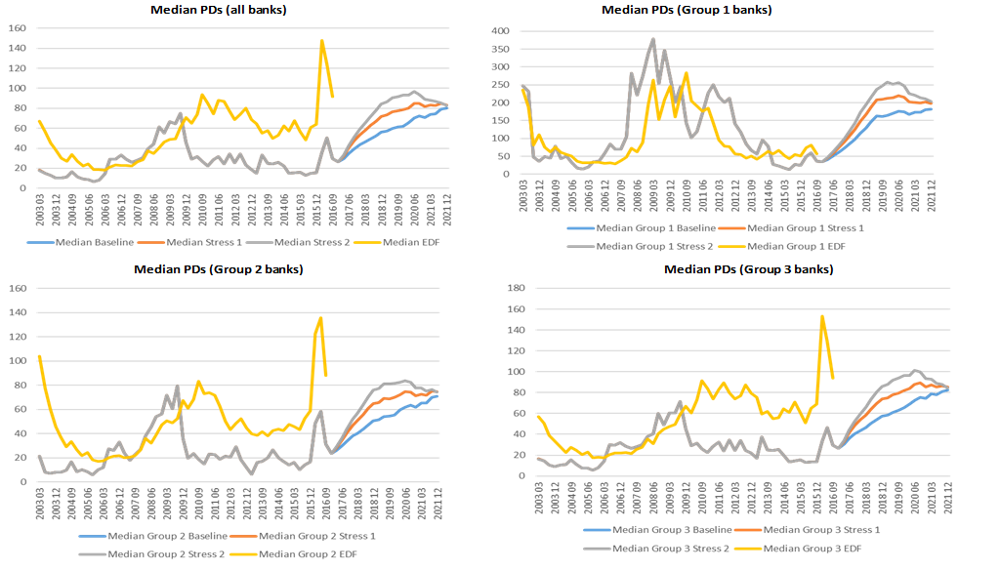
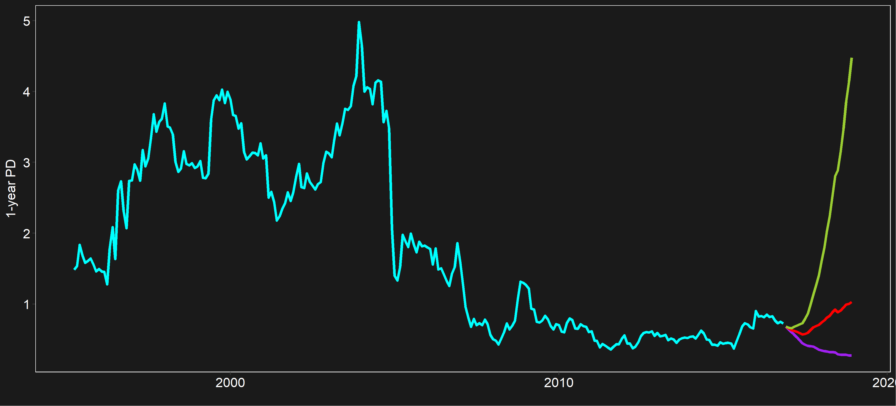
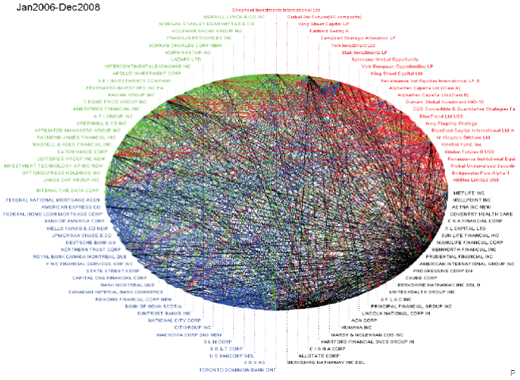
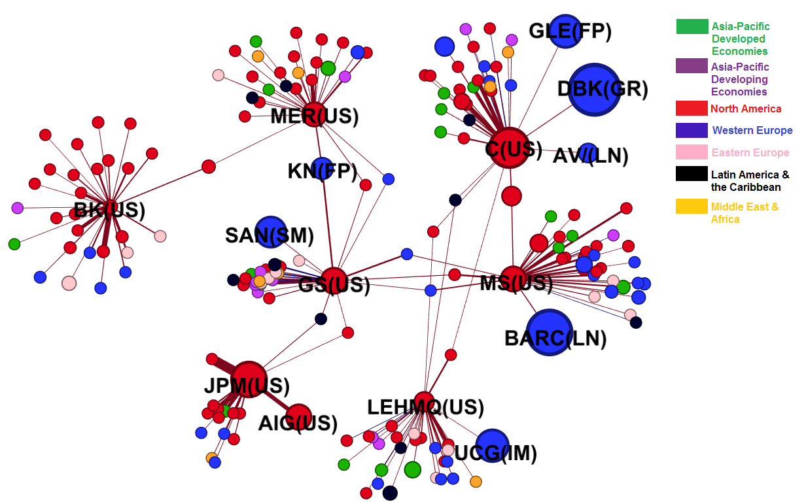

Machine Learning in Financial Risk Analysis:
Practical Applications
Artificial Intelligence and Machine Learning Symposium International Monetary Fund November 27-28, 2017
Machine learning ...
enhances financial risk analysis
by complementing state-of-the-art models
and by making big data manageable
Machine Learning applied to 3 problems
Predict the default risk of firms
Construct systemic risk rankings
Model banks' adaptive behavior
Our first problem:
Predict default risk under alternative scenarios
Our solution: the BuDA framework
BuDA: A Bottom-Up Default Analysis Platform
Computational platform developed by Jin-Chuan Duan and Weimin Miao, National University of Singapore, and Jorge A. Chan-Lau, International Monetary Fund, with the support of the staff of the Credit Risk Initiative, Risk Management Institute, National University of Singapore

- Matlab interactive stand-alone toolbox
- Thirty nine (39) countries
- 10000+ publicly listed financial firms
BuDA Surveillance Applications
2016 Article IV Canada
2016 Article IV Chile
2016 Article IV Indonesia
2016 Article IV United Arab Emirates
2016 WHD Regional Economic Outlook
2017 FSAP China
2017 FSAP Japan
Japan, median 1-year PD of financial firms, scenario analysis

China, median 1-year PD of financial firms, scenario analysis

Our second problem:
Construct systemic risk rankings capturing contagion risk
Our solution: regularized partial correlation networks
Financial networks can be dense and uninformative

Regularized partial correlation networks
Construct a network of forward-looking default correlations
Reduce number of links using partial correlation rather than correlation
Penalize weak correlations using Lasso-type restrictions
Optimal penalty ensures no orphans (unconnected firms)
Regularized partial correlation networks

2016 April GFSR: Systemic Insurers

Our third problem:
Model banks' adaptive behavior under new regulations
Our solution: ABBA, an agent-based model (ABM) of the banking system
Why agent-based models of the financial system
Financial firms are boundedly rational agents
Regulation and business practices influence network formation
Financial network connectedness emerges endogenously
Connectedness drives contagion risk
Bank decision rules in ABBA

Bank decision rules in ABBA
- Approve and price new loans
- Expand or reduce balance sheet
- Set internal prudential ratios
- Lend or borrow in the interbank market
- Distribute dividends or rebuild capital
- Optimize risk-weight of the balance sheet
ML-based rule calibration in ABMs
- Banks use complex decision rules
- Banks moving towards ML/AI based rules
- Modeling decision rules remains challenging
- Parameters should be validated/calibrated empirically
- Progress with ML surrogates and Deep Learning